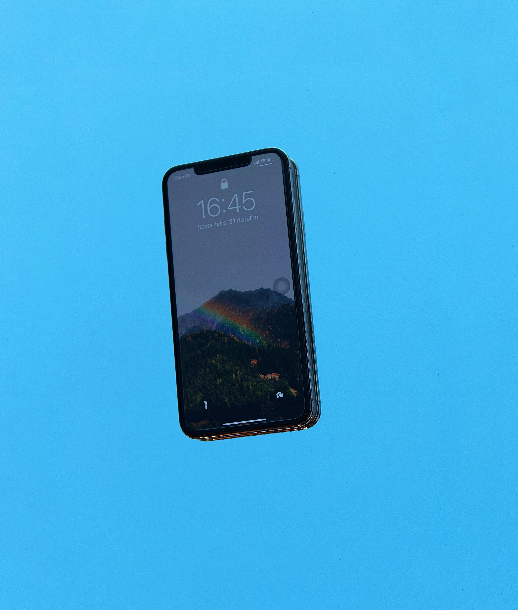
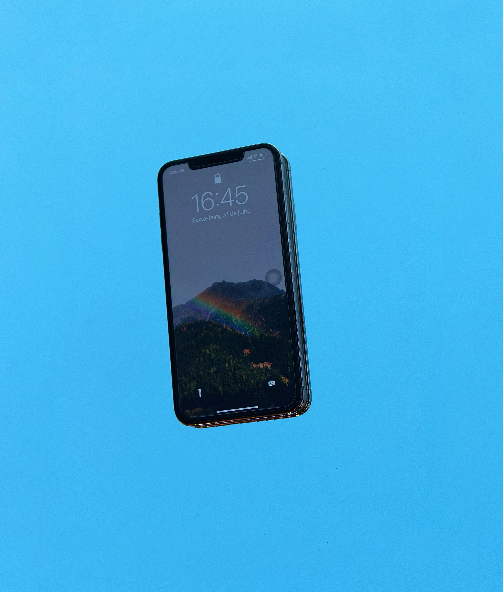

Evolución de la informática

1Evolución y revolución tecnológica
El concepto de evolución tecnológica es confluente con el de revolución tecnológica, puesto que solo durante los períodos de mayor innovación técnica se marca la diferencia del ritmo de desarrollo entre ambos, y de la trascendencia que existe entre los conceptos genéricos de evolución y revolución.
2Funciones de la tecnología
La principal función de la tecnología es transformar el entorno humano, tanto natural como el social, para adaptarlo mejor a las necesidades y deseos humanos, tales como: las necesidades esenciales (alimentación, vestimenta, vivienda, protección personal, relación social, comprensión del mundo natural y social), y en la historia también para obtener placeres corporales y estéticos (deportes, música, hedonismo en todas sus formas) y como medios para satisfacer deseos (simbolización de estatus, fabricación de armas, usar la creatividad y toda la gama de medios artificiales usados para persuadir, convencer y dominar a las personas).
3La historia de la tecnología
La Evolución Tecnológica va mano a mano con la Ciencia, aunque ambas cosas son distintas:
-Los descubrimientos científicos engloban el conocimiento en sí mismo.
-La Tecnología aplica esos conocimientos para resolver una necesidad humana.
GALERIA:


 
